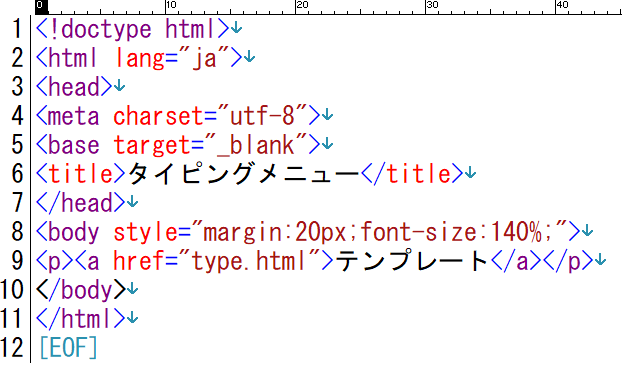
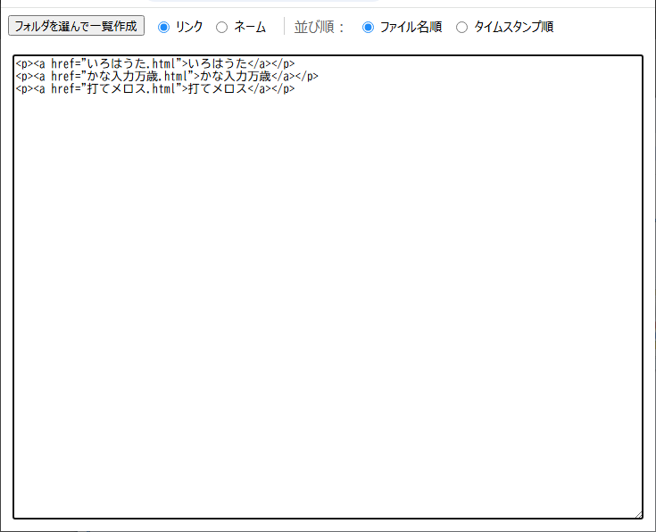
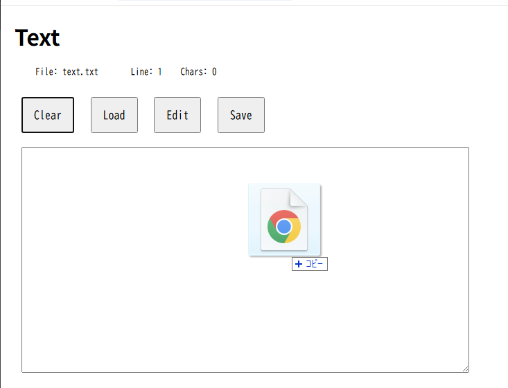
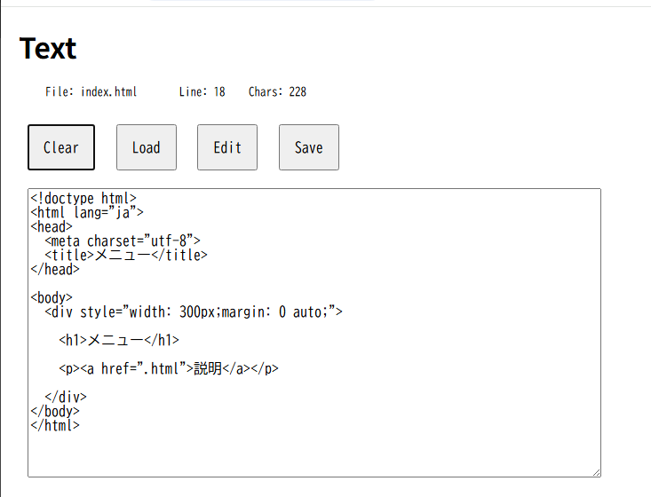
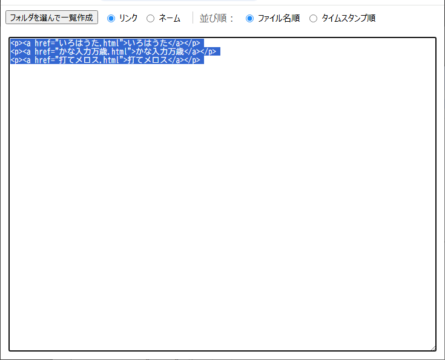
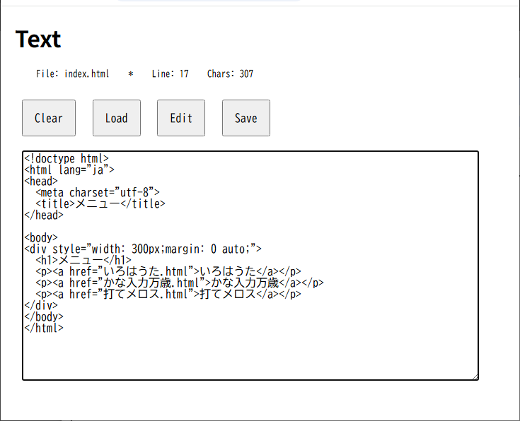

タイピング練習のフォルダを作成
① 右クリックして保存
Chromebookは マイフォルダ＞ダウンロード

② ZIPを展開してtypeフォルダを作成
typeフォルダに問題.htmlをコピー
使用者に配布して問題.htmlをブラウザで表示させる
Chromebookはマイフォルダ内にtypeフォルダを移動

タイピング練習の問題を作成
① type.htmlをコピー
② ファイル名を変更
③ 問題を編集して保存
④ 問題.htmlをダブルクリックして表示
タイピング練習の問題をコピーする
② 問題のページを開く
ショートカットキーを使う:Ctrl + S
③ 問題へのリンクを右クリック 名前を付けて保存
 ④ typeフォルダに移動
④ typeフォルダに移動
⑤ 問題.htmlをダブルクリックして表示

タイピング練習作成用Webアプリ
② ZIPを展開してtoolsフォルダを作成

③ toolsフォルダ内のhtmlをブラウザで開く
Text テキストエディタ
data タイピングのデータ作成
Cat3 タイピングデータの結合
filelist ファイルリスト作成
④ text.htmlを開き、type.htmlを読み込む
 編集して、名前をつけて保存する
編集して、名前をつけて保存する
⑤ Cat3.htmlを開き、type.htmlを読み込む
 ⑥ 後半をコピーして貼り付ける
⑥ 後半をコピーして貼り付ける ⑦ data.htmlを開きデータ部を作成
⑦ data.htmlを開きデータ部を作成 ⑧ 設定を合成
⑧ 設定を合成 ⑨ ctrl+A ctrl+Cでコピー
⑨ ctrl+A ctrl+Cでコピー ⑩ Cat3.htmlに貼り付け
⑩ Cat3.htmlに貼り付け ⑪ titleを入力して、Saveする
⑪ titleを入力して、Saveする
タイピング練習のメニューを作成
① menu.htmlをtypeフォルダにコピー② list.htmlを表示
 ③ 問題.htmlを含むフォルダをドラッグ
③ 問題.htmlを含むフォルダをドラッグ
④ 問題.htmlのリストを抽出
⑤ Text.htmlを表示
⑦ menu.htmlをドラッグ
⑧ 問題.htmlのリストをコピー
⑨ Text.htmlに貼り付け
⑩ menu.htmlを保存